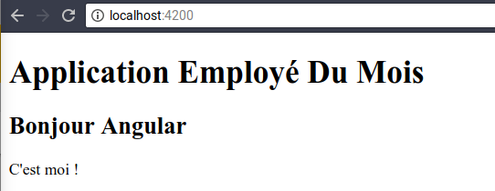

TP - Comprendre les composants
Prérequis
Installer Node 6.9.0+ et NPM 3.0.0+ (https://nodejs.org/).
Installer Typescript.
npm i -g typescript
- Installer Angular CLI.
npm i -g @angular/cli
Vérifier l'installation du client :
ng --version
_ _ ____ _ ___
/ \ _ __ __ _ _ _| | __ _ _ __ / ___| | |_ _|
/ △ \ | '_ \ / _` | | | | |/ _` | '__| | | | | | |
/ ___ \| | | | (_| | |_| | | (_| | | | |___| |___ | |
/_/ \_\_| |_|\__, |\__,_|_|\__,_|_| \____|_____|___|
|___/
Angular CLI: 1.5.0
Node: 6.11.5
OS: linux x64
Angular:
...
Première application Angular
- Créer une application :
ng new bonjour-angular --skip-tests
Arborescence obtenue :
/bonjour-angular
/e2e // tests end to end
/src // sources de l'application
.angular-cli.json // configuration angular-cli
.editorconfig
.gitignore
karma.conf.js // configuration lanceur de test
package.json
protractor.conf.js // configuration tests end to end
README.md
tsconfig.json // configuration compilateur typescript
tslint.json // qualité du code typescript
- Démarrer l'application
cd bonjour-angular
ng serve
- Se rendre à l'adresse suivante avec un navigateur : http://localhost:4200

Premier composant Angular
Angular adopte une approche basée sur des composants.
L'idée est d'étendre HTML et de fournir des balises supplémentaires personnalisées.
Nous allons à présent créer le composant bonjour qui pourrait s'utiliser comme suit dans une page HTML :
<app-bonjour></app-bonjour>
Angular CLI offre la commande generate qui permet de générer un composant.
- Générer le composant bonjour :
ng generate component bonjour
- Modifier le fichier src/app/bonjour/bonjour.component.html comme suit :
<h2>Bonjour Angular</h2>
<p>
C'est moi !
</p>
- Modifier le fichier
src/app/app.component.html.
<h1>Application Employé Du Mois</h1>
<app-bonjour></app-bonjour>
- Vérifier le résultat :

Afficher une donnée
- Créons à présent un nouveau composant bonjour-avec-prenom :
ng generate component bonjour-avec-prenom
- Modifier le composant (
bonjour-avec-prenom.component.ts) comme suit :
import { Component, OnInit } from '@angular/core';
@Component({
selector: 'app-bonjour-avec-prenom',
templateUrl: './bonjour-avec-prenom.component.html',
styleUrls: ['./bonjour-avec-prenom.component.css']
})
export class BonjourAvecPrenomComponent implements OnInit {
prenom:string; // ajout d'une propriété
constructor() {
this.prenom = 'Philippe'; // valorisation de la propriété
}
ngOnInit() {
}
}
- Modifier le fichier HTML
bonjour-avec-prenom.component.htmlcomme suit :
<p>
Bonjour {{prenom}}
</p>
- Modifier le fichier
src/app/app.component.html.
<h1>Application Employé Du Mois</h1>
<app-bonjour></app-bonjour>
<app-bonjour-avec-prenom></app-bonjour-avec-prenom>
- Tester le résultat :

Afficher un tableau de données
- Créons à présent un nouveau composant
bonjour-les-collegues:
ng generate component bonjour-les-collegues
- Modifier le composant
bonjour-les-collegues.component.tscomme suit :
import { Component, OnInit} from '@angular/core';
@Component({
selector: 'app-bonjour-les-collegues',
templateUrl: './bonjour-les-collegues.component.html',
styleUrls: ['./bonjour-les-collegues.component.css']
})
export class BonjourLesColleguesComponent implements OnInit {
collegues:string[];
constructor() {
this.collegues = ['Yves', 'Landry', 'Bob']
}
ngOnInit() {
}
}
- Modifier le fichier HTML
bonjour-les-collegues.component.htmlcomme suit :
<ul>
<li *ngFor="let col of collegues">Bonjour {{col}}</li>
</ul>
- Modifier le fichier
src/app/app.component.html
<h1>Application Employé Du Mois</h1>
<app-bonjour></app-bonjour>
<app-bonjour-avec-prenom></app-bonjour-avec-prenom>
<app-bonjour-les-collegues></app-bonjour-les-collegues>
- Tester le résultat :

Paramètre d'un composant
Faisons à présent évoluer le composant app-bonjour-avec-prenom pour que le prénom qu'il affiche soit paramétrable.
Le composant devra alors s'utiliser comme suit :
<app-bonjour-avec-prenom [prenom]="'Julien'"></app-bonjour-avec-prenom>
La syntaxe [prenom] permet de spécifier un paramètre à un composant.
- Modifier le composant
bonjour-avec-prenom.component.tscomme suit :
import {
Component,
OnInit,
Input // ajouter l'import du composant Input
} from '@angular/core';
@Component({
selector: 'app-bonjour-avec-prenom',
templateUrl: './bonjour-avec-prenom.component.html',
styleUrls: ['./bonjour-avec-prenom.component.css']
})
export class BonjourAvecPrenomComponent implements OnInit {
@Input() prenom:string; // déclarer que ce champ est un paramètre du composant
constructor() {
// ici plus de valorisation de la propriété du composant
}
ngOnInit() {
}
}
- Modifier le composant
app-bonjour-les-collegues.htmlcomme suit :
<ul>
<li *ngFor="let col of collegues">
<app-bonjour-avec-prenom [prenom]="col"></app-bonjour-avec-prenom> <!-- remplacer le texte par l'utilisation du composant bonjour-avec-prenom-->
</li>
</ul>
- Tester.
Point d'entrée
Au fait, qu'est-ce qui se passe quand je fais ng serve ? Quel est le point d'entrée de l'application ?
La commande ng vient de l'outil Angular CLI.
Ce dernier est configurable via le fichier .angular-cli.json.
Le point d'entrée de l'application y est défini via l'attribut main :
{
"$schema": "./node_modules/@angular/cli/lib/config/schema.json",
"project": {
"name": "bonjour-angular"
},
"apps": [
{
"root": "src",
"outDir": "dist",
"assets": [
"assets",
"favicon.ico"
],
"index": "index.html",
"main": "main.ts",
Dans ce cas, il s'agit du fichier main.ts.
import { enableProdMode } from '@angular/core';
import { platformBrowserDynamic } from '@angular/platform-browser-dynamic';
import { AppModule } from './app/app.module';
import { environment } from './environments/environment';
if (environment.production) {
enableProdMode();
}
// le module de démarrage est AppModule issu du fichier src/app/app.module.ts.
platformBrowserDynamic().bootstrapModule(AppModule)
.catch(err => console.log(err));
@NgModule({
declarations: [
AppComponent,
BonjourComponent,
BonjourAvecPrenomComponent,
BonjourLesColleguesComponent
],
imports: [
BrowserModule
],
providers: [],
bootstrap: [AppComponent]
})
export class AppModule { }
declarations: spécifie les composants définis dans le module. Pour utiliser un composant dans un template il faut qu'il soit déclaré.imports: décrit les dépendances du module.providers: utilisé dans le cadre de l'injection de dépendances.bootstrap: spécifie à Angular que lorsqu'un module est chargé, il faut charger le composant configuré.